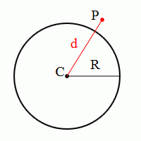
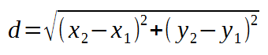

Estos ejercicios de ampliación se plantearon en exámenes de cursos anteriores.
Existen varios algoritmos para calcular el día de la semana en que cae una fecha cualquiera. El que se utiliza en este ejercicio lo cuenta el danés Claus Tøndering en su web The Calendar FAQ.
Escriba un programa que calcule el día de la semana en que cae una fecha cualquiera posterior a 1582 (es decir, desde que se utiliza el calendario gregoriano) mediante el siguiente algoritmo:
El programa no tiene por qué comprobar que se escribe una fecha correcta (más allá de que el año sea posterior a 1582)
CÁLCULO DEL DÍA DE LA SEMANA
Escriba el número de día: 15
Escriba el número de mes: 2
Escriba el número de año (a partir de 1583): 1564
¡Le he pedido un año posterior a 1582!
CÁLCULO DEL DÍA DE LA SEMANA
Escriba el número de día: 1
Escriba el número de mes: 1
Escriba el número de año (a partir de 1583): 1583
El día 1 del mes 1 de 1583 es sábado
CÁLCULO DEL DÍA DE LA SEMANA
Escriba el número de día: 24
Escriba el número de mes: 2
Escriba el número de año (a partir de 1583): 2017
El día 24 del mes 2 de 2017 es viernes
CÁLCULO DEL DÍA DE LA SEMANA
Escriba el número de día: 31
Escriba el número de mes: 7
Escriba el número de año (a partir de 1583): 1990
El día 31 del mes 7 de 1990 es martes
Escriba un programa que calcule el primer dígito de control de una cuenta bancaria, el que corresponde al código de entidad y oficina.
Dígitos de control de ejemplo: 0375 1281 => 3; 0038 3676 => 1; 9517 5646 => 0; 8194 7118 => 7
DIGITO DE CONTROL CUENTA CORRIENTE Escriba el primer dígito de la entidad: 2 Escriba el segundo dígito de la entidad: 0 Escriba el tercer dígito de la entidad: 3 Escriba el cuarto dígito de la entidad: 8 Escriba el primer dígito de la oficina: 6 Escriba el segundo dígito de la oficina: 4 Escriba el tercer dígito de la oficina: 3 Escriba el cuarto dígito de la oficina: 3 El dígito de control es 8. Programa terminado
DIGITO DE CONTROL CUENTA CORRIENTE Escriba el primer dígito de la entidad: -2 Escriba el segundo dígito de la entidad: 0 Escriba el tercer dígito de la entidad: 3 Escriba el cuarto dígito de la entidad: 88 Escriba el primer dígito de la oficina: 6 Escriba el segundo dígito de la oficina: 4 Escriba el tercer dígito de la oficina: 3 Escriba el cuarto dígito de la oficina: 3 Lo siento. No ha escrito correctamente los dígitos. Programa terminado
Escriba un programa conversor de centímetros a kens y shakus, unidades japonesas de longitud.
Se recuerda que un ken son seis shakus y que un shaku equivale a 30,3 cm.
Si se pone un número no positivo, el programa debe dar un aviso de error. Escriba el resultado de shakus con dos decimales.
CONVERTIDOR DE CENTÍMETROS A KENS Y SHAKUS Escriba la cantidad de centímetros: -5 Por favor, escriba un número positivo
CONVERTIDOR DE CENTÍMETROS A KENS Y SHAKUS Escriba la cantidad de centímetros: 100 100 cm son 3.3 shakus, es decir 0 ken(s) y 3.3 shaku(s)
CONVERTIDOR DE CENTÍMETROS A KENS Y SHAKUS Escriba la cantidad de centímetros: 2000 2000 cm son 66.01 shakus, es decir 11 ken(s) y 0.01 shaku(s)
CONVERTIDOR DE CENTÍMETROS A KENS Y SHAKUS Escriba la cantidad de centímetros: 9876 9876 cm son 325.94 shakus, es decir 54 ken(s) y 1.94 shaku(s)
Escriba un programa conversor de peniques a coronas, chelines y libras.
Se recuerda a los que no han leído a Guillermo el travieso que antes de la conversión al sistema decimal una libra eran 20 chelines, un chelín eran 12 peniques y una corona eran 5 peniques.
Convertidor a libras, chelines, coronas y peniques Escriba la cantidad de peniques: 258 258 peniques son 1 libras, 1 chelines 1 coronas y 1 peniques
Convertidor a libras, chelines, coronas y peniques Escriba la cantidad de peniques: 240 240 peniques son 1 libras, 0 chelines 0 coronas y 0 peniques
Convertidor a libras, chelines, coronas y peniques Escriba la cantidad de peniques: 11 11 peniques son 0 libras, 0 chelines 2 coronas y 1 peniques
Convertidor a libras, chelines, coronas y peniques Escriba la cantidad de peniques: 31 31 peniques son 0 libras, 2 chelines 1 coronas y 2 peniques
Escriba un programa que pida la anchura y altura de un rectángulo y que escriba su área, su perímetro y la longitud de su diagonal.
Cálculo de datos de un rectángulo Escriba la anchura del rectángulo: 4 Escriba la altura del rectángulo: 3 La superficie del rectángulo es 12.0 El perímetro del rectángulo es 14.0 La diagonal del rectángulo mide 5.0
Nota: Se recuerda que, por el teorema de Pitágoras, la relación entre diagonal y lados de un rectángulo es diagonal2 = anchura2 + altura2. Se recuerda que la raíz cuadrada de un número es el número elevado a 0,5.
Escriba un programa que pida una fecha y diga si ese día existe.
El programa no tiene por qué comprobar que se escribe una fecha posterior al 15 de octubre de 1582, que fue cuando se instauró el calendario gregoriano.
Se recuerda que enero, marzo, mayo, julio, agosto, octubre y diciembre tienen 31 días, que abril, junio, septiembre y noviembre tienen 30 días y febrero tiene 28 días salvo los años bisiestos en que tiene 29.
COMPROBACIÓN DE FECHA
Escriba el número de día: 24
Escriba el número de mes: 2
Escriba el número de año: 2017
El día 24 del mes 2 del año 2017 existe.
COMPROBACIÓN DE FECHA
Escriba el número de día: 40
Escriba el número de mes: 5
Escriba el número de año: 1982
El día 40 del mes 5 del año 1982 no existe.
COMPROBACIÓN DE FECHA
Escriba el número de día: 0
Escriba el número de mes: 13
Escriba el número de año: 1999
El día 0 del mes 13 del año 1999 no existe.
COMPROBACIÓN DE FECHA
Escriba el número de día: 29
Escriba el número de mes: 2
Escriba el número de año: 2016
El día 29 del mes 2 del año 2016 existe.
COMPROBACIÓN DE FECHA
Escriba el número de día: 29
Escriba el número de mes: 2
Escriba el número de año: 1900
El día 29 del mes 2 del año 1900 no existe.
Ante las posibles consecuencias del referéndum del "Brexit", escriba un programa que permita convertir unidades de volumen de líquidos. Concretamente, el programa debe permitir convertir litros en galones y pintas y viceversa.
Se recuerda que una pinta son 568.26 ml (es decir, 0.56825 litros) y que un galón son 8 pintas.
Al dar las respuestas, el programa debe escribir el número de litros con dos decimales, el número de galones sin decimales y el número de pintas con un decimal.
GALONES Y PINTAS Este programa permite: a. Convertir litros en galones y pintas. b. Convertir galones y pintas en litros. Elija una opción: 2 Debe escribir a o b. Programa terminado
GALONES Y PINTAS Este programa permite: a. Convertir litros en galones y pintas. b. Convertir galones y pintas en litros. Elija una opción: a Convertir litros en galones y pintas Número de litros: 5 5.0 litros son 1 galones y 0.8 pintas. Programa terminado
GALONES Y PINTAS Este programa permite: a. Convertir litros en galones y pintas. b. Convertir galones y pintas en litros. Elija una opción: 2 Convertir galones y pintas en litros. Número de galones: 3 Número de pintas: 7 3 galones y 7.0 pintas son 17.62 litros. Programa terminado
3.0 litros son 0 galones y 5.3 pintas. 5.5 litros son 1 galones y 1.7 pintas. 10 galones y 3.0 pintas son 47.17 litros. 0 galones y 0.5 pintas son 0.28 litros.
Escriba un programa que pida el radio y las coordenadas del centro de una circunferencia y las coordenadas de un punto y que indique si el punto está sobre la circunferencia, dentro o fuera de ella.


PUNTO Y CIRCUNFERENCIA Escriba la coordenada X del centro de la circunferencia: 30 Escriba la coordenada Y del centro de la circunferencia: 40 Escriba el radio de la circunferencia: 50 Escriba la coordenada X del punto: 0 Escriba la coordenada Y del punto: 0 El punto está sobre la circunferencia. Programa terminado
PUNTO Y CIRCUNFERENCIA Escriba la coordenada X del centro de la circunferencia: 10 Escriba la coordenada Y del centro de la circunferencia: 20 Escriba el radio de la circunferencia: 5.5 Escriba la coordenada X del punto: -14.5 Escriba la coordenada Y del punto: 13 El punto está fuera de la la circunferencia. Programa terminado
PUNTO Y CIRCUNFERENCIA Escriba la coordenada X del centro de la circunferencia: -10 Escriba la coordenada Y del centro de la circunferencia: 6.5 Escriba el radio de la circunferencia: 20 Escriba la coordenada X del punto: 5 Escriba la coordenada Y del punto: 15 El punto está dentro de la la circunferencia. Programa terminado
Escriba un programa que pida dos números y diga la distancia entre ellos.
Nota: Haga este ejercicio sin utilizar la función valor absoluto abs().
DISTANCIA Escriba un número: 8 Escriba otro número: 4 La distancia entre 8.0 y 4.0 es 4.0
DISTANCIA Escriba un número: 7 Escriba otro número: 10 La distancia entre 7.0 y 10.0 es 3.0
DISTANCIA Escriba un número: 5.5 Escriba otro número: 5.5 La distancia entre 5.5 y 5.5 es 0.0
DISTANCIA Escriba un número: -6 Escriba otro número: 6 La distancia entre -6.0 y 6.0 es 12.0
Escriba un programa que pida tres números y diga si el tercero está más cerca del primero o del segundo.
Nota: Haga este ejercicio sin utilizar la función valor absoluto abs(), pero utilizando el ejercicio 1.
MÁS CERCA, MÁS LEJOS Escriba un número: 6 Escriba otro número: 8 Escriba otro número más: 3 3.0 está más cerca de 6.0 que de 8.0
MÁS CERCA, MÁS LEJOS Escriba un número: -10 Escriba otro número: 5 Escriba otro número más: 0 0.0 está más cerca de 5 que de -10.0
MÁS CERCA, MÁS LEJOS Escriba un número: 7 Escriba otro número: 7 Escriba otro número más: 10 10.0 está a la misma distancia de 7.0 que de 7.0
Escriba un programa que pida tres números y diga si forman una sucesión aritmética o geómetrica.
Se recuerda que:
Sucesiones Escriba un número: 5 Escriba otro número: 5 Escriba otro número más: 5 5.0 5.0 5.0 forman una sucesión aritmética de diferencia 0 y una sucesión geométrica de razón 1.
Sucesiones Escriba un número: 3 Escriba otro número: 9 Escriba otro número más: 27 3.0 9.0 27.0 forman una sucesión geométrica de razón 3.0
Sucesiones Escriba un número: 2.1 Escriba otro número: -1 Escriba otro número más: 4.3 2.1 -1.0 4.3 no forman ni una sucesión aritmética ni geométrica
Escriba un programa que pregunte cuántos números se van a introducir, pida esos números, y muestre un mensaje cada vez que un número no sea distinto al anterior.
¿Cuántos valores va a introducir? -1 ¡Imposible!
¿Cuántos valores va a introducir? 4 Escriba un número: 6 Escriba un número distinto de 6 : 10 Escriba un número distinto de 10 : 10 ¡ 10 no es distinto de 10 ! Escriba un número distinto de 10 : 9 Gracias por su colaboración
Escriba un programa que pregunte cuántos números se van a introducir, pida esos números, y escriba cuántos de esos números era mayor que el anterior.
Notas:
¿Cuántos valores va a introducir? -1 ¡Imposible!
¿Cuántos valores va a introducir? 4 Escriba el primer número: 3 Escriba el número 2: 5 Escriba el número 3: 3 Escriba el número 4: 7 Ha escrito 2 valores mayores que el anterior
¿Cuántos valores va a introducir? 3 Escriba el primer número: 4 Escriba el número 2: 4 Escriba el número 3: 2 Ha escrito 0 valores mayores que el anterior
Escriba un programa que pregunte cuantos números se van a introducir, pida esos números (que puedan ser decimales) y calcule su producto y su media geométrica.
Se recuerda que la media geométrica de n valores es la raíz n-ésima del producto de esos valores.
¿Cuántos valores va a introducir? -1 ¡Imposible!
¿Cuántos valores va a introducir? 3 Escriba el número 1 : 4 Escriba el número 2 : 6 Escriba el número 3 : 8 El producto de los números que ha escrito es 192.0 La media geométrica de los números que ha escrito es 5.8
Escriba un programa que pida primero cuántos números se van a escribir, que pida a continuación esa cantidad de números y al final diga tanto la suma de los números pares introducidos como la suma de los númeos impares introducidos.
SUMADOR DE PARES E IMPARES ¿Cuántos números va a escribir? 4 Escriba un número entero: 6 Escriba un número entero: 9 Escriba un número entero: 7 Escriba un número entero: 2 La suma de los números pares que ha escrito es 8 La suma de los números impares que ha escrito es 16 Programa terminado
SUMADOR DE PARES E IMPARES ¿Cuántos números va a escribir? -3 Programa terminado
Escriba un programa que pida primero un número y cuántos números se van a escribir, que pida a continuación esa cantidad de números y al final diga si se han escrito más veces el primer número o números distintos a éste.
REPETICIONES Escriba un número entero: 3 ¿Cuántos números va a escribir? 4 Escriba un número entero: 4 Escriba un número entero: 3 Escriba un número entero: 3 Escriba un número entero: 5 Ha escrito tantas veces el número 3 como el resto de números. Programa terminado
REPETICIONES Escriba un número entero: 5 ¿Cuántos números va a escribir? 3 Escriba un número entero: 1 Escriba un número entero: 2 Escriba un número entero: 5 Ha escrito menos veces el número 5 que el resto de números. Programa terminado
REPETICIONES Escriba un número entero: 0 ¿Cuántos números va a escribir? -3 ¡Valor incorrecto! No puede escribir -3 números. Programa terminado